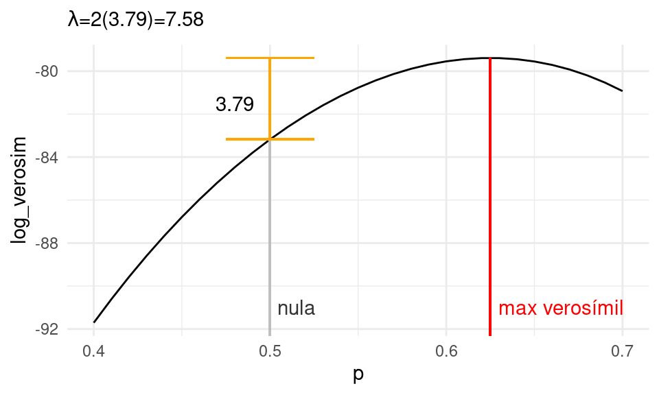
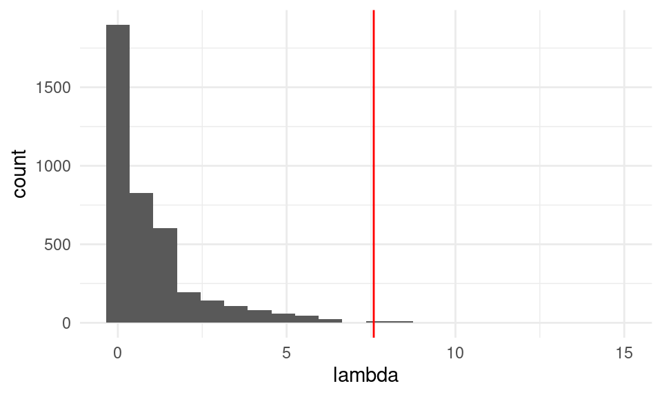
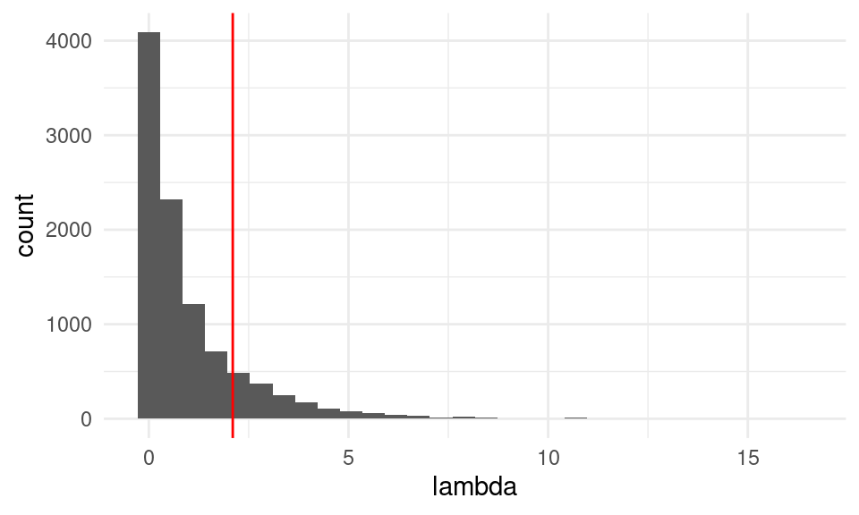
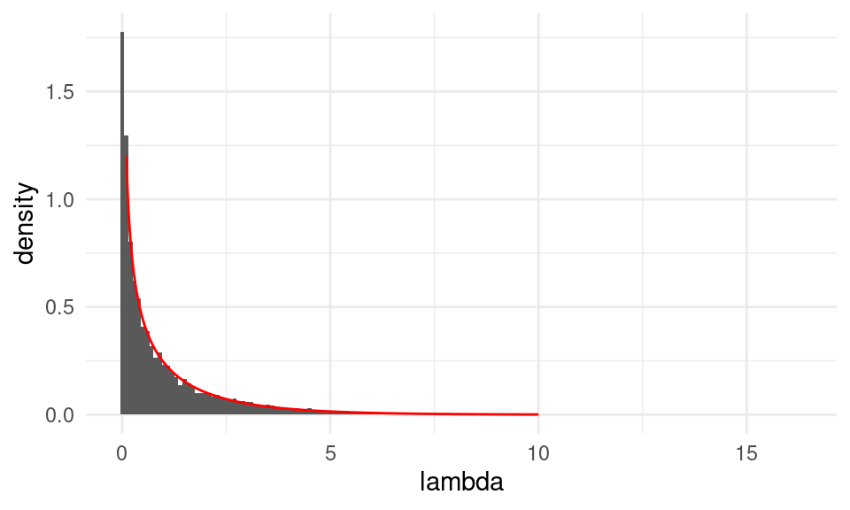
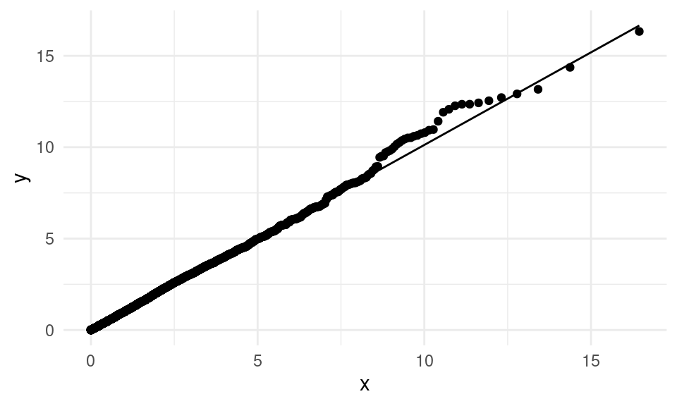
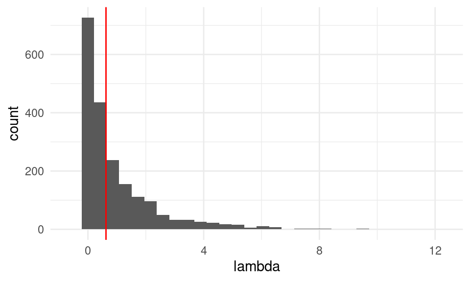
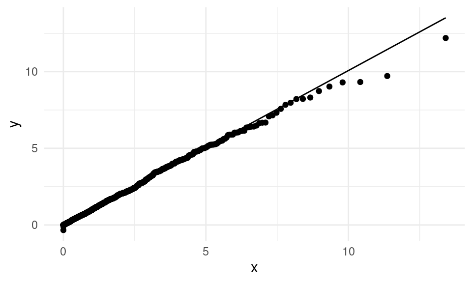
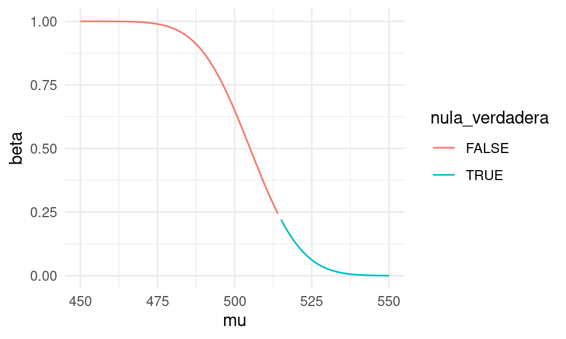

Sección 9 Más de pruebas de hipótesis e intervalos
En esta sección veremos enfoques más clásicos para analizar una prueba de hipótesis. en particular veremos situaciones donde podemos hacer algunos supuestos teóricos acerca de la distribución de las poblaciones. Esta es una sección complementaria para entender prácticas estadísticas usuales: recuerda que discutimos antes que hacer estimación por intervalos generalmente es más útil que hacer pruebas de hipótesis, y adicionalmente, tenemos también la técnica de pruebas de permutaciones que podemos aplicar en muchos de los casos que discutiremos a continuación.
El enfoque básico es el mismo que cuando vimos pruebas de permutaciones: calculamos una estadística de prueba de los datos y luego, con una distribución de referencia (asociada a la hipótesis nula), calculamos un valor-\(p\). Si el valor-\(p\) es chico, entonces los resultados observados no pueden explicarse fácilmente por variación muestral, y rechazamos la hipótesis nula.
Con esta idea básica, y supuestos distribucionales acerca de las poblaciones, podemos construir pruebas que requieren menos cómputo. La desventaja es que hay que checar con cuidado los supuestos distribucionales que hagamos. Si los supuestos son incorrectos, las valores-\(p\) no tienen mucho sentido y son difíciles de interpretar.
Para esta sección seguiremos más a Wasserman (2013) (capítulo 10), pero puedes revisar también Chihara and Hesterberg (2018) (capítulo 8).
Prueba de Wald
Como hemos visto, existe normalidad asintótica en varios estimadores que hemos considerado, como medias y proporciones muestrales. También vimos que estimadores de máxima verosimilitud cumplen muchas veces un teorema central del límite.
Así que supongamos que tenemos una estadística \(\hat{\theta}_n\) que estima \(\theta\) y es asintóticamente insesgada y normal. Denotamos por \(\hat{\textsf{ee}}\) una estimación de su error estándar —hay distintas maneras de hacerlo: por ejemplo, con simulación (bootstrap), o por medios analíticos (teoría). Recuerda que el error estándar de una estadística es la desviación estándar de su distribución de muestreo.
Si nos interesa probar la hipótesis de que \(\theta = 125\), por ejemplo, y \(\hat{\theta}_n\) es aproximadamente normal, entonces podemos construir una distribución de referencia aproximada como sigue:
- Si la nula es cierta, entonces la distribución de muestreo de \(\hat{\theta}\) es aproximadamente \(\mathsf{N}(125, \hat{\textsf{ee}})\).
- Esto implica que la siguiente estadística \(W\) es aproximadamente normal estándar bajo la nula:
\[W = \frac{\hat{\theta} - 125}{\hat{\textsf{ee}}} \sim \mathsf{N}(0,1)\] Por lo que valores lejanos de \([-2,2]\), por ejemplo, dan evidencia en contra de la hipótesis nula. Como \(W\) no depende de ningún parámetro desconocido, podemos usarla como distribución de referencia para comparar el valor de \(W\) que obtuvimos en la muestra.
Si observamos para nuestra muestra un valor \(W=w\) entonces, el valor-\(p\) (dos colas) de esta prueba es, aproximadamente,
\[\mathsf{valor-}p \approx P(|Z| > |w|) = 2(1 - \Phi(|w|))\] donde \(Z\sim \mathsf{N}(0,1)\) y \(\Phi\) es su función de distribución acumulada.
Ejemplo: media muestral. La media nacional de las escuelas de enlace está alrededor de 454 (matemáticas en 6o. grado). Tomamos una muestra de 180 escuelas del Estado de México, y queremos saber si la media obtenida es consistente o no con la media nacional. Ya que estamos usando como estimador una media de una muestra iid, podemos estimar el error estándar de la media con
\[\hat{\textsf{ee}} = s / \sqrt{n}\] Obtenemos:
set.seed(29)
muestra_edomex <- read_csv("data/enlace.csv") %>%
filter(estado == "ESTADO DE MEXICO") %>%
sample_n(180)
resumen <- muestra_edomex %>%
summarise(media = mean(mate_6), s = sd(mate_6), n = n()) %>%
mutate(ee = s / sqrt(n))
resumen## # A tibble: 1 × 4
## media s n ee
## <dbl> <dbl> <int> <dbl>
## 1 456. 155. 180 11.5La hipótesis nula es que la media poblacional del Estado de México es igual a 454. Calculamos el valor-\(p\) usando la prueba de Wald:
dif <- (resumen %>% pull(media)) - 454
ee <- resumen %>% pull(ee)
w <- dif / ee
p <- 2 * (1 - pnorm(abs(w)))
p## [1] 0.8410806y vemos que esta muestra es consistente con la media nacional. No tenemos evidencia en contra de que la media del estado de México es muy similar a la nacional.
- Repite esta prueba con una muestra de Chiapas. ¿Qué resultado obtienes?
Tenemos entonces:
Prueba de Wald. Consideramos probar la hipótesis nula \(H_0: \theta = \theta_0\) contra la alternativa \(H_1: \theta \neq \theta_0\).
Suponemos que \(\hat{\theta}_n\) es asintóticamente normal e insesgada, de modo que bajo la hipótesis nula \[\frac{\hat{\theta}_n - \theta_0}{\hat{\textsf{ee}}} \sim \mathsf{N}(0,1).\] Entonces el valor-\(p\) de la prueba de Wald para esta hipótesis nula es
\[\mathsf{valor-}p \approx P(|Z| > |w|) = 2(1 - \Phi(|w|)).\]
Ejemplo. Podemos hacer la prueba de Wald para proporciones con el estimador usual \(\hat{p}_n\) que estima una proporción poblacional \(p\). En este caso, utilizamos la estimación usual del error estándar de \(\hat{p}_n\), que está dada por \[\hat{\textsf{ee}} = \sqrt{\frac{\hat{p}_n(1-\hat{p}_n)}{n}}.\] Supongamos por ejemplo que en nuestros datos observamos que en \(n=80\) muestras independientes, tenemos \(x=47\) éxitos. ¿Es esto consistente con la hipótesis nula \(p = 0.5\)?
Calcuamos primero:
p_hat <- 47 / 80
ee <- sqrt(p_hat * (1 - p_hat) / 80)y la estadística \(W\) de prueba es:
w <- (p_hat - 0.5) / ee
w## [1] 1.58978Calculamos su valor p:
valor_p <- 2 * (1 - pnorm(abs(w)))
valor_p## [1] 0.1118843Y vemos que en este caso tenemos evidencia baja de que la proporción poblacional es distinta de 0.5.
Observación: pruebas \(t\) y práctica estadística
Con más supuestos distribucionales podemos hacer otros tipos de pruebas donde no requerimos hacer supuestos asintóticos. Por ejemplo, si suponemos que la muestra obtenida \(X_1,\ldots, X_n\) proviene de una distribución normal \(\mathsf{N}(\mu, \sigma)\) (cosa que es necesario verificar), entonces es posible demostrar que la estadística
\[T = \frac{\bar{X} - \mu}{S / \sqrt{n}}\] tiene una distribución exacta que es \(t\) de Student con \(n-1\) grados de libertad, y no depende de otros parámetros, de manera que podemos usarla como distribución de referencia y podemos calcular valores \(p\) exactos (revisa la sección 8.1 de Chihara and Hesterberg (2018)).
La diferencia con usar una prueba de Wald está en que aquí consideramos también la variablidad del error estándar estimado, lo que correctamente sugiere que esperamos variaciones proporcionalmente más grandes en \(T\) comparado con lo que sucede si no consideramos esta variación (como en la prueba de Wald). Sin embargo:
- Si la muestra \(n\) es grande, la distribución \(t\) de Student con \(n-1\) grados de libertad es muy similar a la normal estándar, de manera que la aproximación de Wald es apropiada.
- Cuando la muestra \(n\) es chica, es difícil validar el supuesto de normalidad, a menos que tengamos alguna información adicional acerca de la distribución poblacional.
- La prueba tiene cierta robustez a desviaciones de normalidad de las observaciones, pero si el sesgo es muy grande, por ejemplo, el supuesto es incorrecto y da valores \(p\) distorsionados.
Puedes ver aquí, o el apéndice B.11 de Chihara and Hesterberg (2018) para ver descripciones de la distribución \(t\) y cómo se compara con una normal estándar dependiendo de los grados de libertad.
En muchas ocasiones, en la práctica es común no checar supuestos y saltar directamente a hacer pruebas \(t\), lo cual no es muy seguro. Si tenemos duda de esos supuestos, podemos hacer pruebas gráficas o de permutaciones, si son apropiadas.
Prueba de Wald para dos medias o proporciones
Cuando tenemos dos muestras extraidas de manera independiente de dos poblaciones distintas, y queremos ver si la hipótesis de medias poblacionales iguales es consistente con los datos, podemos usar también una prueba de Wald.
Sea \(\bar{X}_1\) y \(\bar{X}_2\) las medias muestrales correspondientes. Si la hipótesis de normalidad aplica para ambas distribuciones muestrales (normalidad asintótica), la variable \[\hat{\delta} = \bar{X}_1 - \bar{X}_2\] es aproximadamente normal con media \(\mathsf{N}(\mu_1 - \mu_2, \textsf{ee})\), donde \(\mu_1\) y \(\mu_2\) son las medias poblacionales correspondientes, y donde el error estándar de \(\hat{\delta}\) es la raíz de la suma de los cuadrados de los errores estándar de \(\bar{X}\) y \(\bar{Y}\):
\[ \textsf{ee} = \sqrt{\textsf{ee}_1^2 + \textsf{ee}_{2}^2}.\] Se sigue entonces que: \[\textsf{ee} =\sqrt{\frac{\sigma_1^2}{n_1}+\frac{\sigma_2^2}{n_2} }\] (Nota: usa probabilidad para explicar por qué es cierto esto). De esto se deduce que bajo la hipótesis nula de igualdad de medias \(\mu_1 = \mu_2\), tenemos que la estadística de Wald
\[W = \frac{\hat{\delta} - 0}{\sqrt{\frac{s_1^2}{n_1}+\frac{s_2^2}{n_2}} } \sim \mathsf{N}(0,1)\] es aproximamente normal estándar. Procedemos entonces a calcular el valor \(p\) usando la función de distribución acumulada de la normal estándar.
En el caso particular de proporciones, podemos simplificar, como hicimos arriba, a \[W = \frac{\hat{p}_1 - \hat{p}_2}{\sqrt{\frac{\hat{p}_1(1-\hat{p}_1)}{n_1}+\frac{\hat{p}_2(1-\hat{p}_2)}{n_2}} } \sim \mathsf{N}(0,1)\]
- Haz una prueba comparando las medias en enlace de la Ciudad de México vs Estado de México. ¿Hay evidencia de que tienen distintas medias?
Ejemplo (Wasserman (2013)). Supongamos tenemos dos conjuntos de prueba para evaluar algoritmos de predicción, de tamaños \(n_1=100\) y \(n_2=250\) respectivamente, tenemos dos algoritmos para generar predicciones de clase (digamos positivo y negativo). Usaremos el primer conjunto para evaluar el algoritmo 1 y el segundo para evaluar el algoritmo 2. El algoritmo 1 corre en 1 hora, y el algoritmo 2 tarda 24 horas.
Supón que obtenemos que la tasa de clasificación correcta del primer algoritmo es \(\hat{p}_1 = 0.85\), y la tasa del segundo es de \(\hat{p}_2 = 0.91\). ¿Estos datos son consistentes con la hipótesis de que los algoritmos tienen desempeño muy similar? Es decir, queremos probar la hipótesis \(p_1 = p_2\).
Calculamos la estadística de Wald:
n_1 <- 100
n_2 <- 250
p_hat_1 <- 0.86
p_hat_2 <- 0.90
ee <- sqrt(p_hat_1 * (1 - p_hat_1) / n_1 + p_hat_2 * (1 - p_hat_2) / n_2)
delta = p_hat_1 - p_hat_2
w <- delta / ee
w## [1] -1.011443que da un valor p de:
2 * (1 - pnorm(abs(w)))## [1] 0.3118042Y vemos que valor-\(p\) es grande, de forma que los datos son consistentes con la hipótesis de que los algoritmos tienen desempeño similar. ¿Cómo tomaríamos nuestra decisión final? Si la diferencia entre 1 hora y 24 horas no es muy importante, entonces preferíamos usar el algoritmo 2. Sin embargo, si el costo de 24 horas es más alto que 1 hora de corrida, los datos no tienen indicios fuertes de que vayamos a perder en desempeño, y podriamos seleccionar el algoritmo 1.
Datos pareados
Las pruebas que acabamos de ver para comparar medias requieren poblaciones independientes. Si las dos muestras están pareadas (es decir, son dos mediciones en una misma muestra), podemos tomar considerar las diferencias \(D_i = X_i - Y_i\) y utilizar la prueba para una sola muestra con la media \(\bar{D}\). Esta es una prueba de Wald pareada.
Ejemplo (Wasserman (2013)). Ahora supongamos que utilizamos la misma muestra de tamaño \(n=300\) para probar los dos algoritmos. En este caso, no debemos hacer la prueba para medias de muestras independientes. Sin embargo, esto podemos ponerlo en términos de una prueba para una sola muestra.
Tenemos las observaciones \(X_1,\ldots, X_n\) y \(Y_1,\dots, Y_n\), donde \(X_i=1\) si el algoritmo 1 clasifica correctamente, y 0 en otro caso. Igualmente, \(Y_i=1\) si el algoritmo 2 clasifica correctamente, y 0 en otro caso. Definimos
\[D_i= X_i - Y_i\] Y \(D_1,\ldots, D_n\) es una muestra iid. Ahora observemos que la media \(\bar{D}\) tiene valor esperado \(p_1 - p_2\), donde \(p_1\) y \(p_2\) son las tasas de correctos del algoritmo 1 y del algoritmo 2 respectivamente. Podemos hacer una prueba de Wald como al principio de la sección:
\[W = \frac{\bar{D} - 0}{{\textsf{ee}}}\] Y notemos que el error estándar no se calcula como en el ejemplo anterior. Podríamos usar bootstrap para estimarlo, pero en este caso podemos usar el estimador usual
\[\hat{\textsf{ee}} = S / \sqrt{n}\] donde \[S = \frac{1}{n}\sum_{i=1}^n (D_i - \bar{D})^2\] y nótese que necesitamos las decisiones indiviudales de cada algoritmo para cada caso, en contraste al ejemplo anterior de muestras independientes donde los errores estándar se calculaban de manera independiente. Esto tiene sentido, pues la variablidad de \(\bar{D}\) depende de cómo están correlacionados los aciertos de los dos algoritmos.
Supongamos por ejemplo que los datos que obtenemos son:
datos_clasif %>% head## # A tibble: 6 × 3
## caso x y
## <chr> <dbl> <dbl>
## 1 1 1 1
## 2 2 0 1
## 3 3 0 1
## 4 4 0 1
## 5 5 0 1
## 6 6 1 0Como explicamos arriba, nos interesa la diferencia. Calculamos \(d\):
datos_clasif <- datos_clasif %>%
mutate(d = x - y)
datos_clasif %>% head## # A tibble: 6 × 4
## caso x y d
## <chr> <dbl> <dbl> <dbl>
## 1 1 1 1 0
## 2 2 0 1 -1
## 3 3 0 1 -1
## 4 4 0 1 -1
## 5 5 0 1 -1
## 6 6 1 0 1Y ahora calculamos la media de \(d\) (y tasa de correctos de cada clasificador:)
medias_tbl <-
datos_clasif %>% summarise(across(where(is.numeric), mean, .names = "{col}_hat"))
d_hat <- pull(medias_tbl, d_hat)
medias_tbl## # A tibble: 1 × 3
## x_hat y_hat d_hat
## <dbl> <dbl> <dbl>
## 1 0.81 0.893 -0.0833Ahora necesitamos calcular el error estándar. Como explicamos arriba, hacemos
ee <- datos_clasif %>%
mutate(d_hat = mean(d)) %>%
mutate(dif_2 = (d - d_hat)) %>%
summarise(ee = sd(dif_2) / sqrt(n())) %>%
pull(ee)
ee ## [1] 0.03112829Y ahora podemos calcular la estadística \(W\) y el valor p correspondiente:
w <- d_hat / ee
valor_p <- 2 * (1 - pnorm(abs(w)))
c(w = w, valor_p = valor_p) %>% round(3)## w valor_p
## -2.677 0.007Y vemos que tenemos evidencia considerable de que el desempeño no es el mismo: el algoritmo 2 parece ser mejor.
- ¿Qué pasaría si incorrectamente usaras la prueba de dos muestras para este ejemplo? ¿Qué cosa cambia en la fórmula de la estadística de Wald?
Pruebas de cociente de verosimilitud
Otra técnica clásica para hacer pruebas de hipótesis es el de cociente de verosimilitudes. Con esta técnica podemos hacer pruebas que involucren varios parámetros, y podemos contrastar hipótesis nulas contra alternativas especificas.
Para aplicar este tipo de pruebas es necesario hacer supuestos distribucionales (modelos probabilísticos), pues estas pruebas se basan en la función de verosimilitud \(\mathcal{L}(\theta; x_1,\ldots, x_n)\).
Ejemplo. Supongamos que tenemos la hipótesis nula de que una moneda es justa (\(p =0.5\) de sol). En 120 tiros de la moneda (que suponemos independientes), observamos 75 soles. Recordemos la función de log-verosimilitud para el modelo binomial (ignorando constantes que no dependen de \(p\)) es \[\ell(p) = 75 \log(p) + (120 - 75)\log(1-p) \]
- Primero calculamos el estimador de máxima verosimilitud de \(p\), que es \(\hat{p} = 75/120 = 0.625\). Evaluamos la verosimilitud
\[\ell(\hat{p}) = \ell(0.625) = 75\log(0.625) + 45\log(0.375) = -79.388\] - Ahora evaluamos la verosimlitud según la hipótesis nula, donde asumimos que \(p = 0.5\):
\[\ell(p_0) = \ell(0.5) = 75\log(0.5) + 45\log(0.5) = -83.177\] - Finalmente, contrastamos estos dos números con una estadística que denotamos con \(\lambda\):
\[\lambda = 2\left[\ell(\hat{p}) - \ell(p_0)\right] = 2[\ell(0.625)- \ell(0.5)] = 2(3.79)=7.58\]
A \(\lambda\) se le llama la estadística de cociente de verosimilitud. Tomamos la diferencia de log verosimilitudes, que es los mismo que tomar el logaritmo del cociente de verosimilitudes, y de ahí el nombre de la prueba.
Nótese que cuando este número \(\lambda\) es muy grande, esto implica que la hipótesis nula es menos creíble, o menos consistente con los datos, pues la nula tiene mucho menos verosimilitud de lo que los datos indican. Por otro lado, cuando este valor es cercano a 0, entonces tenemos menos evidencia en contra de la hipótesis nula. Esto se explica en la siguiente gráfica:
log_verosim <- function(p){
75 * log(p) + (120 - 75) * log(1 - p)
}
verosim_tbl <- tibble(p = seq(0.4, 0.7, 0.01)) %>%
mutate(log_verosim = log_verosim(p))
ggplot(verosim_tbl, aes(x = p, y = log_verosim)) +
geom_line() +
geom_segment(x = 75/120, xend = 75/120, y = -130, yend = log_verosim(75/120), colour = "red") +
geom_segment(x = 0.5, xend = 0.5, y = -130, yend = log_verosim(0.5), colour = "gray") +
geom_errorbar(aes(x = 0.5, ymin = log_verosim(0.5), ymax = log_verosim(75/120)),
colour = "orange", width = 0.05) +
annotate("text", x = 0.48, y = -81.5, label = "3.79") +
annotate("text", x = 0.515, y = -91, label ="nula", colour = "gray20") +
annotate("text", x = 0.665, y = -91, label ="max verosímil", colour = "red") +
labs(subtitle = expression(paste(lambda, "=2(3.79)=7.58"))) 
Este método puede generalizarse para que no solo aplique a hipótesis nulas donde \(\theta = \theta_0\), sino en general, \(\theta \in \Theta_0\). Por ejemplo, podemos construir pruebas para \(\theta < 0.4\).
Definición. Consideramos la hipótesis nula \(\theta= \theta_0\). La estadística del cociente de verosimilitudes está dada por:
\[\lambda = 2\log\left( \frac{\max_{\theta}\mathcal{L}(\theta)}{\max_{\theta=\theta_0}\mathcal{L}(\theta)} \right ) = 2\log\left( \frac{\mathcal{L}(\hat{\theta})}{\mathcal{L}(\theta_0)} \right)\]
donde \(\hat{\theta}\) es el estimador de máxima verosimilitud.Para construir una prueba asociada, como siempre, necesitamos una distribución de referencia. Esto podemos hacerlo con simulación, o usando resultados asintóticos.
Distribución de referencia para pruebas de cocientes
Para nuestro ejemplo anterior, podemos simular datos bajo la hipótesis nula, y ver cómo se distribuye la estadística \(\lambda\):
Ejemplo. Simulamos bajo la hipótesis nula como sigue:
n_volados <- 120 # número de volados
simulados_nula <- rbinom(4000, n_volados, p = 0.5)
lambda <- function(n, x, p_0 = 0.5){
# estimador de max verosim
p_mv <- x / n
# log verosimilitud bajo mv
log_p_mv <- x * log(p_mv) + (n - x) * log(1 - p_mv)
# log verosimllitud bajo nula
log_p_nula <- x * log(p_0) + (n - x) * log(1 - p_0)
lambda <- 2*(log_p_mv - log_p_nula)
lambda
}
lambda_obs <- lambda(n_volados, 75, 0.5)
sims_tbl <- tibble(sim_x = simulados_nula) %>%
mutate(lambda = map_dbl(sim_x, ~ lambda(n_volados, .x, p_0 = 0.5)))
ggplot(sims_tbl, aes(x = lambda)) +
geom_histogram(binwidth = 0.7) +
geom_vline(xintercept = lambda_obs, color = "red") Con esta aproximación a la distribución de referencia podemos calcular el valor p en nuestro ejemplo anterior:
valor_p <- mean(sims_tbl$lambda >= lambda_obs)
valor_p## [1] 0.00675y observamos que tenemos evidencia fuerte en contra de la hipótesis nula: la moneda no está balanceada.
Ejemplo. Este ejemplo es un poco artificial, pero lo usamos para entender mejor las pruebas de cocientes de verosimlitud. Supongamos que tenemos una muestra de \(\mathsf{N}(\mu, 1)\), y queremos probar si \(\mu = 8\). Asumimos que el supuesto de normalidad y desviación estándar iugal a 1 se cumplen.
set.seed(3341)
n_muestra <- 100
muestra_1 <- rnorm(n_muestra, 7.9, 1)crear_log_p <- function(x){
# crear log verosim para dos muestras normales independientes.
log_p <- function(params){
mu <- params[1]
log_vero <- dnorm(x, mean = mu, sd = 1, log = TRUE) %>% sum
log_vero
}
}
lambda_calc <- function(muestra, crear_log_p){
log_p <- crear_log_p(muestra)
res <- optim(c(0), log_p, control = list(fnscale = -1))
lambda_mv <- log_p(res$par)
lambda_nula <- log_p(8.0)
lambda <- 2 * (lambda_mv - lambda_nula)
lambda
}
lambda <- lambda_calc(muestra_1, crear_log_p)
lambda## [1] 2.101775Ahora construimos con simulación la distribución de referencia usando simulaciones bajo la nula
sims_nula <- map(1:10000, ~ rnorm(n_muestra, 8, 1))
lambda_nula_sim <- map_dbl(sims_nula, ~ lambda_calc(.x, crear_log_p))
tibble(lambda = lambda_nula_sim) %>%
ggplot(aes(x = lambda)) + geom_histogram() +
geom_vline(xintercept = lambda, colour = "red") 
valor_p <- mean(lambda_nula_sim >= lambda)
valor_p## [1] 0.1537Estos datos muestran consistencia con la hipótesis \(\mu = 8\).
Discusión: Nota en los dos ejemplos anteriores la similitud entre las distribuciones de referencia. En ambos casos, estas distribuciones resultan ser aproximadamente \(\chi\)-cuadrada con 1 grado de libertad (ji-cuadrada). Podemos checar para el último ejemplo:
teorica <- tibble(x = seq(0.1, 10, 0.01)) %>%
mutate(f_chi_1 = dchisq(x, df = 1))
tibble(lambda = lambda_nula_sim) %>%
ggplot() + geom_histogram(aes(x = lambda, y = ..density..), binwidth = 0.1) +
geom_line(data = teorica, aes(x = x, y = f_chi_1), colour = "red") 
O mejor, con una gráfica de cuantiles de las simulaciones vs la téorica:
tibble(lambda = lambda_nula_sim) %>%
ggplot(aes(sample = lambda)) +
geom_qq(distribution = stats::qchisq, dparams = list(df = 1)) +
geom_qq_line(distribution = stats::qchisq, dparams = list(df = 1)) 
Este resultado asintótico no es trivial, y se usa comúnmente para calcular valores \(p\). Discutiremos más este punto más adelante.
Otro tipo de pruebas
Con cocientes de verosimlitud podemos diseñar pruebas para contrastar condiciones que sólo un subconjunto de parámetros cumple.
Ejemplo. Supongamos que queremos hacer una prueba de igualdad de medias \(\mu_1 = \mu_2\) para dos poblaciones normales \(\mathsf{N}(\mu_1, \sigma_1)\) y \(\mathsf{N}(\mu_2, \sigma_2)\), donde extraemos las muestras de manera independiente, y no conocemos las desviaciones estándar. Obtenemos dos muestras (que supondremos provienen de distribuciones normales, pues ese es nuestro supuesto)
set.seed(223)
muestra_1 <- rnorm(80, 0.8, 0.2)
muestra_2 <- rnorm(120, 0.8, 0.4)Necesitamos: 1) calcular el valor de la estadística \(\lambda\) de cociente de verosimilitudes, 2) Calcular la distribución de referencia para \(\lambda\) bajo la hipótesis nula y finalmente 3) Ver qué tan extremo es el valor obtenido de \(\lambda\) en relación a la distribución de referencia.
crear_log_p <- function(x, y){
# crear log verosim para dos muestras normales independientes.
log_p <- function(params){
mu_1 <- params[1]
mu_2 <- params[2]
sigma_1 <- params[3]
sigma_2 <- params[4]
log_vero_1 <- dnorm(x, mean = mu_1, sd = sigma_1, log = TRUE) %>% sum
log_vero_2 <- dnorm(y, mean = mu_2, sd = sigma_2, log = TRUE) %>% sum
log_vero <- log_vero_1 + log_vero_2 #se suman por independiencia
log_vero
}
}
log_p <- crear_log_p(muestra_1, muestra_2)crear_log_p_nula <- function(x, y){
log_p <- function(params){
# misma media
mu <- params[1]
sigma_1 <- params[2]
sigma_2 <- params[3]
log_vero_1 <- dnorm(x, mean = mu, sd = sigma_1, log = TRUE) %>% sum
log_vero_2 <- dnorm(y, mean = mu, sd = sigma_2, log = TRUE) %>% sum
log_vero <- log_vero_1 + log_vero_2 #se suman por independiencia
log_vero
}
}
log_p_nula <- crear_log_p_nula(muestra_1, muestra_2)Ahora tenemos el problema de que no conocemos las sigma. Estas deben ser estimadas para después calcular el cociente de verosimilitud:
res <- optim(c(0, 0, 1, 1), log_p, method = "Nelder-Mead",
control = list(fnscale = -1))
res$convergence## [1] 0est_mv <- res$par
names(est_mv) <- c("mu_1", "mu_2", "sigma_1", "sigma_2")
est_mv## mu_1 mu_2 sigma_1 sigma_2
## 0.8153471 0.7819913 0.1987545 0.3940484Y tenemos
lambda_1 <- log_p(est_mv)
lambda_1## [1] -42.76723Ahora calculamos el máximo bajo el supuesto de la hipótesis nula:
res <- optim(c(0, 1, 1), log_p_nula, method = "Nelder-Mead",
control = list(fnscale = -1))
res$convergence## [1] 0est_mv_nula <- res$par
names(est_mv) <- c("mu", "sigma_1", "sigma_2")
est_mv_nula## [1] 0.8062091 0.1989438 0.3948603y evaluamos
lambda_2 <- log_p_nula(est_mv_nula)
lambda_2## [1] -43.07902Finalmente, nuestra estadística \(\lambda\) es
lambda <- 2 * (lambda_1 - lambda_2)
lambda## [1] 0.6235661Y ahora necesitamos calcular un valor-\(p\). El problema que tenemos en este punto es que bajo la hipótesis nula no están determinados todos los parámetros, así que no podemos simular de manera simple muestras para obtener la distribución de referencia. Podemos sin embargo usar bootstrap paramétrico usando los estimadores de máxima verosimilitud bajo la nula
simular_boot <- function(n_1, n_2, est_mv_nula){
x <- rnorm(n_1, est_mv_nula[1], est_mv_nula[2])
y <- rnorm(n_2, est_mv_nula[1], est_mv_nula[3])
list(x = x, y = y)
}
lambda_nula_sim <- function(est_mv_nula){
muestras <- simular_boot(80, 120, est_mv_nula)
x <- muestras$x
y <- muestras$y
log_p <- crear_log_p(x, y)
log_p_nula <- crear_log_p_nula(x, y)
est_1 <- optim(c(0,0,1,1), log_p, control = list(fnscale = -1))
est_2 <- optim(c(0,1,1), log_p_nula, control = list(fnscale = -1))
lambda <- 2*(log_p(est_1$par) - log_p_nula(est_2$par))
lambda
}
lambda_sim <- map_dbl(1:2000, ~ lambda_nula_sim(est_mv_nula = est_mv_nula))Y graficamos la distribución de referencia junto con el valor de \(\lambda\) que obtuvimos:
tibble(lambda = lambda_sim) %>%
ggplot(aes(x = lambda)) +
geom_histogram() +
geom_vline(xintercept = lambda, colour = "red") Y claramente los datos son consistentes con medias iguales. El valor-\(p\) es
mean(lambda_sim > lambda)## [1] 0.4275Verificamos una vez más que la distribución de referencia es cercana a una \(\chi\)-cuadrada con un grado de libertad.
tibble(lambda = lambda_sim) %>%
ggplot(aes(sample = lambda)) +
geom_qq(distribution = stats::qchisq, dparams = list(df = 1)) +
geom_qq_line(distribution = stats::qchisq, dparams = list(df = 1))
Esta es la definición generalizada de las pruebas de cociente de verosimilitudes
Definición. Consideramos la hipótesis nula \(\theta \in \Theta_0\). La estadística del cociente de verosimilitudes está dada por:
\[\lambda = 2\log\left( \frac{\max_{\theta}\mathcal{L}(\theta)}{\max_{\theta\in\Theta_0}\mathcal{L}(\theta)} \right ) = 2\log\left( \frac{ \mathcal{L}(\hat{\theta})}{\mathcal{L}(\hat{\theta}_0)} \right)\]
donde \(\hat{\theta}\) es el estimador de máxima verosimilitud de \(\theta\) y \(\hat{\theta}_0\) es el estimador de máxima verosimilitud de \(\theta\) cuando restringimos a que \(\theta \in \Theta_0\).En nuestro ejemplo anterior, el espacio \(\Theta_0\) era \(\{ (\mu,\mu,\sigma_1, \sigma_2)\}\), que es un subconjunto de \(\{ (\mu_1,\mu_2,\sigma_1, \sigma_2)\}\). Nótese que el espacio \(\Theta_0\) tiene tres parámetros libres, mientras que el espacio total tiene 4.
Aunque podemos usar el bootstrap paramétrico para construir distribuciones de referencia para estas pruebas y calcular un valor-\(p\), el siguiente teorema, cuya demostración no es trivial, explica las observaciones que hicimos arriba. Este teorema enuncia la estrategia del enfoque clásico, que utiliza una aproximación asintótica.
Valores p para pruebas de cocientes de verosimilitud. Supongamos que \(\theta = (\theta_1,\theta_2, \ldots, \theta_p)\). Sea \[\Theta_0 = \{\theta : \theta_1 = a_1, \theta_2 = a_2, \dots, \theta_q = a_q \},\] es decir la hipótesis \(\theta \in \Theta_0\) es que los primeros \(q\) parámetros de \(\theta\) estan fijos en algún valor. Los otros parámetros no se consideran en esta prueba.
Si \(\lambda\) es la estadística de cociente de verosimilitudes de esta prueba, entonces, bajo la nula \(\theta \in \Theta_0\) tenemos que la distribución de \(\lambda\) es asintóticamente \(\chi\)-cuadrada con \(q\) grados de libertad, denotada por \(\chi^2_q\).
El valor-\(p\) para esta prueba es \[P(\chi^2_{q} > \lambda)\]Observaciones:
Para hacer cálculos con la distribución \(\chi\)-cuadrada usamos rutinas numéricas (por ejemplo la función
pchisqen R).Nótese que \(p\) es la dimensión del espacio \(\Theta\) (\(p\) parámetros), y que \(p-q\) es la dimensión del espacio \(\Theta_0\) (pues \(q\) parámetros están fijos), de modo que los grados de libertad son la dimensión de \(\Theta\) menos la dimensión de \(\Theta_0\).
En nuestro primer ejemplo (proporción de éxitos) solo teníamos un parámetro. El espacio \(\Theta_0\) es de dimensión 0, así que los grados de libertad son \(1 = 1 - 0\)
En este último ejemplo donde probamos igualdad de medias, el espacio \(\Theta\) tiene dimensión 4, y el espacio \(\Theta_0\) es de dimensión 3 (tres parámetros libres), por lo tanto los grados de libertad son \(1 = 4 -3\).
Ejemplo En nuestro ejemplo de prueba de igualdad de medias, usaríamos
pchisq(lambda, df =1, lower.tail = FALSE)## [1] 0.4297252que es similar al que obtuvimos con la estrategia del bootstrap paramétrico.
Errores tipo I y tipo II
En algunas ocasiones, en lugar de solamente calcular un valor-\(p\) queremos tomar una decisión asociada a distintas hipótesis que consideramos posibles. Por ejemplo, nuestra hipótesis nula podría ser
- Hipótesis nula \(H_0\): Una medicina nueva que estamos probando no es efectiva en reducir el colesterol en pacientes.
Y queremos contrastar con una alternativa:
- Hipótesis alternativa \(H_A\): la medicina nueva reduce los niveles de colesterol en los pacientes.
La decisión que está detrás de estas pruebas es: si no podemos rechazar la nula, la medicina no sale al mercado. Si rechazamos la nula, entonces la medicina es aprobada para salir al mercado.
Para diseñar esta prueba, procedemos como sigue:
- Definimos cómo recolectar datos \(X\) de interés
- Definimos una estádistica \(T(X)\) de los datos.
- Definimos una región de rechazo \(R\) de valores tales que si \(T(X)\in R\), entonces rechazaremos la hipótesis nula (e implícitamente tomaríamos la decisión asociada a la alternativa).
Ejecutamos la prueba observando datos \(X=x\), calculando \(T(x)\), y checando si \(T(x) \in R\). Si esto sucede entonces decimos que rechazamos la hipótesis nula, y tomamos la decisión asociada a la alternativa.
Ejemplo. Si tenemos la hipótesis nula \(p_1=0.5\) para una proporción, y al alternativa es \(p_1\neq 0.5\), podemos usar la estadística de Wald \(T(x) = \frac{\hat{p_1} - 0.5}{\hat{\textsf{ee}}}\). Podríamos definir la región de rechazo como \(R = \{T(x) : |T(x)| > 3 \}\) (rechazamos si en valor absoluto la estadística de Wald es mayor que 3).
Cuando diseñamos una prueba de este tipo, quisiéramos minimizar dos tipos de errores:
- Rechazar la hipótesis nula \(H_0\) cuando es cierta: Error tipo I
- No rechazar la hipótesis nula \(H_0\) cuando \(H_0\) es falsa: Error tipo II
La gravedad de cada error depende del problema. En nuestro ejemplo de la medicina, por ejemplo:
- Un error tipo II resultaría en una medicina efectiva que no sale al mercado, lo que tiene consecuencias financieras (para la farmaceútica) y costos de oportunidad en salud (para la población). Por otra parte,
- Un error tipo I resultaría en salir al mercado con una medicina que no es efectiva. Esto tiene costos de oportunidad financieros que pueden ser grandes para la sociedad. Todos estos costos dependen, por ejempĺo, de qué tan grave es la enfermedad, qué tan costosa es la medicina, y así sucesivamente.
- En el enfoque más clásico, los errores tipo I y tipo II generalmente no se balancean según su severidad o probabilidad. En lugar de eso, generalmente se establece un límite para la probabilidad de cometer un error del tipo I (usualmente 5%, por una tradición que no tiene mucho fundamento)
En vista de este ejemplo simple, y las observaciones de arriba:
- Reducir una decisión compleja a una prueba de hipótesis con resultados binarios (rechazar o no) es generalmente erróneo.
- Las pruebas de hipótesis se usan muchas veces incorrectamente cuando lo más apropiado es usar estimación por intervalos o algo similar que cuantifique la incertidumbre de las estimaciones.
Consulta por ejemplo el comunicado de la ASA acerca de p-values y pruebas de hipótesis
En el caso de la medicina, por ejemplo, realmente no nos interesa que la medicina sea mejor que un placebo. Nos importa que tenga un efecto considerable en los pacientes. Si estimamos este efecto, incluyendo incertidumbre, tenemos una mejor herramienta para hacer análisis costo-beneficio y tomar la decisión más apropiada.
Como dijimos, típicamente se selecciona la región de rechazo de forma que bajo la hipótesis nula la probabilidad de cometer un error tipo I está acotada.
Definición. Supongamos que los datos \(X_1,X_2,\ldots, X_n\) provienen de una distribución \(F_\theta\), donde no conocemos \(\theta\). Supongamos que la hipótesis nula es que \(\theta = \theta_0\) (que llamamos una hipótesis simple).
La función de potencia de una prueba con región de rechazo \(R\) se define como la probabilidad de rechazar para cada posible valor del parámetro \(\theta\) \[\beta(\theta) = P_\theta (X\in R).\]
El tamaño de una prueba se define como el valor
\[\alpha = \beta(\theta_0),\]
es decir, la probabilidad de rechazar la nula (\(\theta = \theta_0\)) erróneamente.Observación. Esto se generaliza para hipótesis compuestas, donde la nula es que el parámetro \(\theta\) está en un cierto conjunto \(\Theta_0\). Por ejemplo, una hipótesis nula puede ser \(\theta < 0.5\). En este caso, \(\alpha\) se define como el valor más grande que \(\beta(\theta)\) toma cuando \(\theta\) está en \(\Theta_0\), es decir, la probabilidad de rechazo más grande cuando la hipótesis nula se cumple.
Decimos que una prueba tiene nivel de significancia de \(\alpha\) si su tamaño es menor o igual a \(\alpha\).
Decimos que la potencia de una prueba es la probabilidad de, correctamente, rechazar la hipótesis nula cuando la alterna es verdadera:
\[\beta(\theta_a) = P_{\theta_a} (X \in R).\]
Observación: Sería deseable encontrar la prueba con mayor potencia bajo \(H_a\), entre todas las pruebas con tamaño \(\alpha\). Esto no es trivial y no siempre existe.
Observación: El valor \(p\) es el menor tamaño con el que podemos rechazar \(H_0\).
Ejemplo (Chihara and Hesterberg (2018)) Supongamos que las calificaciones de Enlace de alumnos en México se distribuye aproximadamente como una normal con media 515 y desviación estándar de 120. En una ciudad particular, se quiere decidir si es neceario pedir fondos porque la media de la ciudad es más baja que la nacional. Nuestra hipótesis nula es \(H_0: \mu \geq 515\) y la alternativa es \(\mu < 515\), así que si rechazamos la nula se pedirían los fondos.
Supondremos que la distribución de calificaciones en la ciudad es también aproximadamente normal con desviación estándar de 130. Se plantea tomar una muestra de 100 alumnos, y rechazar si la media muestral \(\bar{X}\) es menor que 505. ¿Cuál es la probabilidad \(\alpha\) de tener un error de tipo I?
La función de potencia es \[\beta(\mu) = P_\mu(\bar{X} < 505)\] Restando la media \(\mu\) y estandarizando obtenemos \[\beta(\mu) = P \left (\frac{\bar{X} - \mu}{130/\sqrt{100}} < \frac{505 -\mu}{130/\sqrt{100}} \right )\] así que \[\beta(\mu) = \Phi \left (\frac{505 -\mu}{130/\sqrt{100}}\right ),\] donde \(\Phi\) es la función acumulada de la normal estándar. La gráfica de la función potencia es entonces
potencia_tbl <- tibble(mu = seq(450, 550, 1)) %>%
mutate(beta = pnorm((505 - mu)/13)) %>% # probabilidad de rechazar
mutate(nula_verdadera = factor(mu >= 515)) # nula verdadera
ggplot(potencia_tbl, aes(x = mu, y = beta, colour = nula_verdadera)) +
geom_line() 
Es decir, si la media \(\mu\) de la ciudad es muy baja, con mucha seguridad rechazamos. Si es relativamente alta entonces no rechazamos. El tamaño de la prueba es el mayor valor de probabilidad de rechazo que se obtiene sobre los valores \(\mu\geq 515\) (la nula). Podemos calcularlo analíticamente como sigue:
Si \(\mu \geq 515\), entonces \[\beta(\mu) \leq \beta(515) = \Phi\left (\frac{505 -515}{130/\sqrt{100}}\right ) = \Phi( - 10 / 13) = \Phi(-0.7692)\] que es igual a
pnorm(-0.7692)## [1] 0.2208873Y este es el tamaño de la prueba. En otras palabras: si la ciudad no está por debajo de la media nacional, hay una probabilidad de 22% de que erróneamente se pidan fondos (al rechazar \(H_0\)).
Ejemplo Supongamos que los que programan el presupuesto deciden que se requiere tener una probabilidad de a lo más 5% de rechazar erróneamente la hipótesis nula (es decir, pedir fondos cuando en realidad su media no está debajo de la nacional) para poder recibir fondos. ¿Cuál es la región de rechazo que podríamos escoger?
En el caso anterior usamos la región \(\bar{X}<505\). Si el tamaño de muestra está fijo en \(n=100\) (por presupuesto), entonces tenemos que escoger un punto de corte más extremo. Si la región de rechazo es \(\bar{X} < C)\) entonces tenemos, siguiendo los cálculos anteriores, que \[0.05 = \alpha = \Phi \left ( \frac{C -515}{130/\sqrt{100}}\right) = \Phi \left( \frac{C- 515}{13} \right)\] Buscamos el cuantil 0.05 de la normal estándar, que es
z_alpha <- qnorm(0.05)
z_alpha## [1] -1.644854Y entonces requerimos que
\[\frac{C- 515}{13} = -1.6448.\] Despejando obtenemos
C <- 13*z_alpha + 515
C## [1] 493.6169Así que podemos usar la región \(\bar{X} < 493.5\), que es más estricta que la anterior de \(\bar{X} < 505\).
Considera la potencia de la prueba \(\beta(\mu)\) que vimos arriba. Discute y corre algunos ejemplos para contestar las siguientes preguntas:
- Recuerda la definición: ¿qué significa \(\beta(\mu)\)?
- ¿Qué pasa con la potencia cuando \(\mu\) está más lejos de los valores de la hipótesis nula?
- ¿Qué pasa con la potencia cuando hay menos variabilidad en la población? ¿Y cuando la muestra es más grande?
- ¿Qué pasa si hacemos más chico el nivel de significancia?
Consideraciones prácticas
Algunos recordatorios de lo que hemos visto:
Rechazar la nula no quiere decir que la nula es falsa, ni que encotramos un “efecto”. Un valor-\(p\) chico tampoco quiere decir que la nula es falsa. Lo que quiere decir es que la nula es poco consistente con los datos que observamos, o que es muy poco probable que la nula produzca los datos que observamos.
Rechazar la nula (encontrar un efecto “significativo”) no quiere decir que el efecto tiene importancia práctica. Si la potencia es alta (por ejemplo cuando el tamaño de muestra es grande), puede ser que la discrepancia de los datos con la nula es despreciable, entonces para fines prácticos podríamos trabajar bajo el supuesto de la nula. Por eso en general preferimos hacer estimación que pruebas de hipótesis para entender o resumir los datos y tamaños de las discrepancias.
Adicionalmente, muchas de las hipótesis nulas que generalmente se utilizan se pueden rechazar sin datos (por ejemplo, igualdad de proporciones en dos poblaciones reales). Lo que importa es qué tan diferentes son, y qué tan bien podemos estimar sus diferencias.
En la literatura, muchas veces parece que “encontrar una cosa interesante” es rechazar una hipótesis nulas con nivel 5% de significancia. Es más importante entender cómo se diseñó el estudio, cómo se recogieron los datos, cuáles fueron las decisiones de análisis que pasar el mítico nivel de 5%
Cuando la potencia es baja (por ejemplo porque el tamaño de muestra es muy chico), tenemos que observar diferencias muy grandes para rechazar. Si probamos algo poco factible (por ejemplo, que la vitamina \(C\) aumenta la estatura a los adultos), entonces los rechazos generalmente se deben a variabilidad en la muestra (error tipo II).
Cuando diseñamos y presentamos resultados de un estudio o análisis, es mejor pensar en describir los datos y su variabilidad, y mostrar estimaciones incluyendo fuentes de incertidumbre, en lugar de intentar resumir con un valor-\(p\) o con el resultado de una prueba de hipótesis.
Pruebas múltiples
En algunas ocasiones se hacen muchas pruebas para “filtrar” las cosas que son interesantes y las que no. Por ejemplo, cuando comparamos miles de genes entre dos muestras (la nula es que son similares). Si cada prueba se conduce a un nivel \(\alpha\), la probablilidad de tener al menos un rechazo falso (un error tipo I) es considerablemente más alta que \(\alpha\).
Por ejemplo, si repetimos una prueba de hipótesis con nivel \(\alpha\) con muestras independientes, la probabilidad de tener al menos un rechazo falso es \(1-(1-\alpha)^n\), que es muy cercano a uno si \(n\) es grande (¿cómo derivas esta fórmula?). Por ejemplo, si \(\alpha = 0.05\) y \(n = 100\), con más de 99% probabilidad tendremos al menos un rechazo falso, o un “hallazgo” falso. Sin \(n\) es muy grande, varios de los hallazgos que encontremos serán debidos a variabilidad muestral.
Puedes ver en (Wasserman 2013), sección 10.7 métodos conservadores como corrección de Bonferroni (sólo rechazar cuando el valor-\(p\) es menor a \(0.05/n\)), o la técnica más moderna de control de tasa de descubrimientos falsos (FDR).
Cuando estamos en una situación como esta (que es más retadora en cuanto a análisis), sin embargo, sugerimos usar estimaciones que tomen cuenta todos los datos con regularización apropiada: por ejemplo, en lugar de trabajar con cada muestra por separado, intentamos construir un modelo para el proceso completo de muestreo. Una posibilidad son modelos jerárquicos bayesianos. Ver por ejemplo (Gelman, Hill, and Yajima 2012).